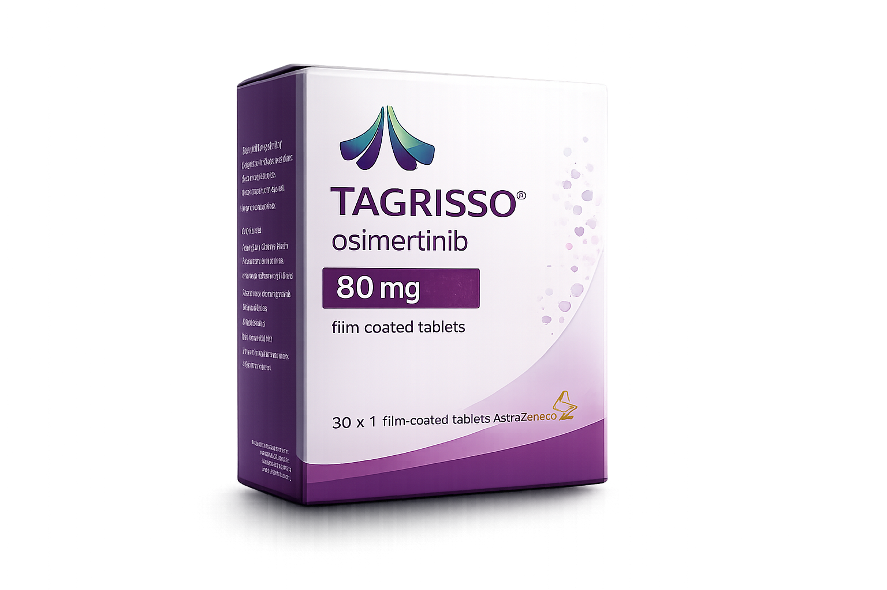
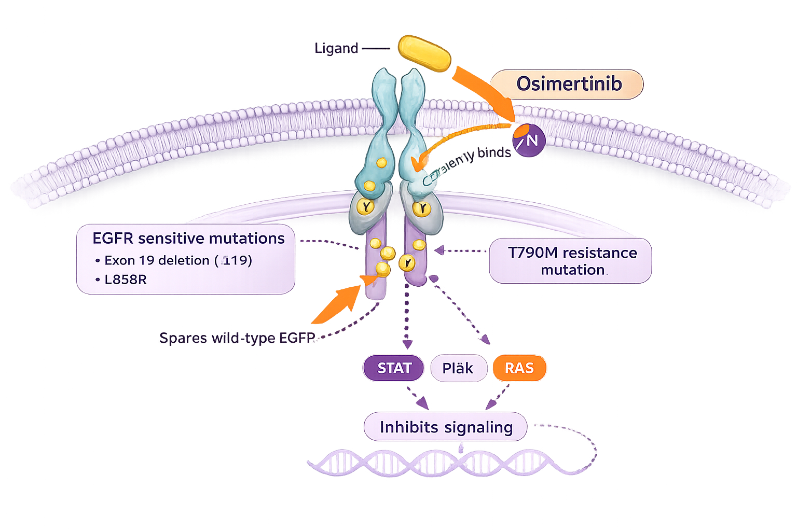

AstraZeneca
Tagrisso is a third-generation EGFR tyrosine kinase inhibitor indicated for the treatment of EGFR-mutated non-small cell lung cancer (NSCLC).
Tagrisso
Osimertinib
AstraZeneca
Oral
FDA Approved
Osimertinib is a third-generation, irreversible EGFR tyrosine kinase inhibitor that selectively inhibits both EGFR sensitizing mutations (Exon 19 deletion and L858R) and the T790M resistance mutation while sparing wild-type EGFR.

| Trial | Setting | PFS | OS |
|---|---|---|---|
| FLAURA | 1st Line | 18.9 Months | 38.6 Months |
| ADAURA | Adjuvant | Significant DFS Benefit | Improved Overall Survival |
Recommended dose: 80 mg orally once daily.
| Recommended Dose | 80 mg once daily |
|---|---|
| Route | Oral |
| With Food | With or without food |
| Missed Dose | Skip if next dose is due within 12 hours. |